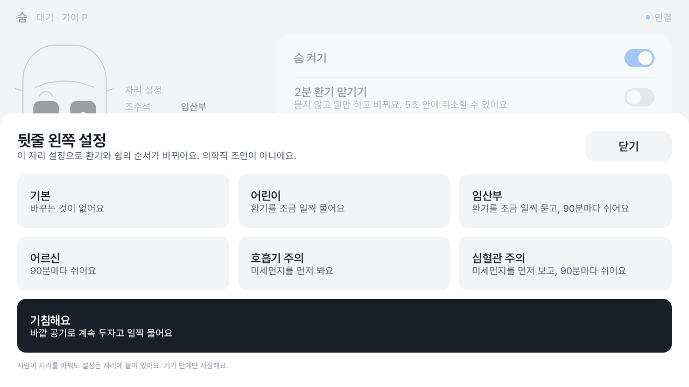
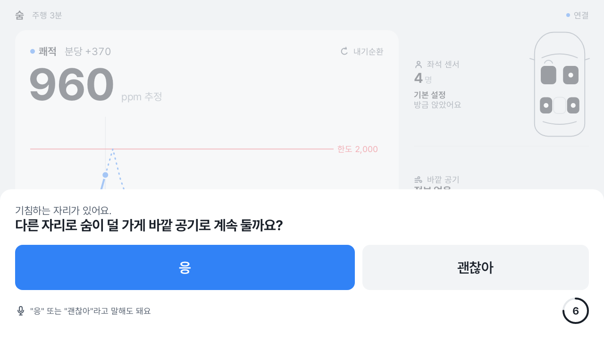
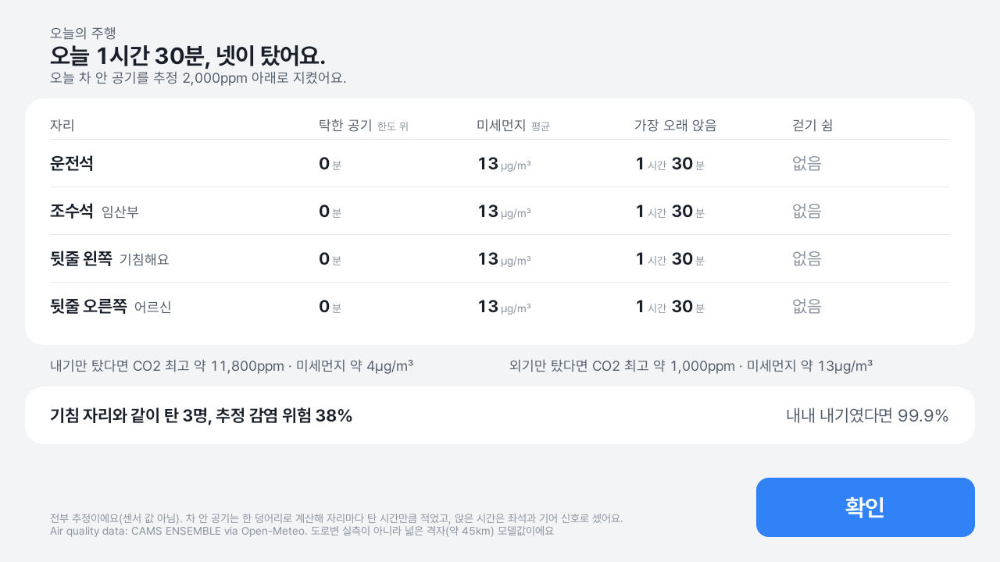

숨
기침하는 사람이 탄 자리를 누르면, 차가 먼저 묻고 바깥 공기로 바꿔 같이 탄 사람의 추정 감염 위험을 줄이는 Pleos Connect 앱입니다. 같은 엔진이 탁한 공기, 미세먼지, 앉은 시간도 자리마다 챙깁니다.
시연 영상 2분 5초. 인물과 풍경은 AI로 만들었고, 앱 화면은 실제 프로토타입 캡처입니다.
숏폼 57초
90분, 기침하는 1명과 같이 탄 3명
| 내기순환 그대로 | 가끔 환기 (5분 내기, 2분 외기) | 숨: 바깥 공기 계속 | |
|---|---|---|---|
| 한 명의 추정 감염 위험 | 98.7% | 59.8% | 23.4% |
| 셋 중 기대 감염자 수 | 2.96명 | 1.79명 | 0.70명 |
| 운전자가 하는 일 | 버튼을 직접 찾기 | 버튼을 여러 번 | "응" 한마디 |
Knibbs, Morawska, Bell (2012), Epidemiology and Infection 140(3)의 Wells-Riley 식과 같은 논문의 실측 공기 교환율(2005년형 골프, 100km/h)로 계산한 추정치입니다. 공기가 고루 섞인다고 본 값이며 의학적 효과를 보장하지 않습니다.
앱 화면



화면 1280×720, Pleos Connect 에뮬레이터 v2.1.0 기준. 자세한 실행 방법은 저장소 README에 있습니다.